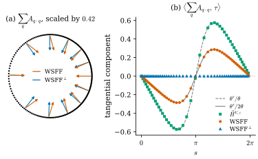

48.3 The Weak Second Fundamental Form
Goals
- G-linear variation \(\delta_{ijk}V\)을 정의하고, 그것이 first variation을 포함하는 더 많은 정보임(Proposition 48.3.3)을 설명할 수 있다.
- density \(\beta\)에서 tensor \(A\)를 푸는 \(n^3\)개의 linear equation이 언제나 유일한 해를 갖고, 그 해가 \(n \times n\) system 하나로 닫힌 꼴이 된다는 것(Lemma 48.3.5)을 증명할 수 있다.
- weak second fundamental form(WSFF)과 그 orthogonal 판(WSFF\(^\perp\))을 정의하고, 둘이 언제 같고 언제 다른지 예로 말할 수 있다.
- 밀도가 고르지 않은 curve에서 WSFF가 밀도의 기울기를 curvature로 잘못 읽는다는 것을 계산과 그림(Figure 48.3.1)으로 확인할 수 있다.
Prerequisites
- Section 48.2: \(A\), \(B\)와 (1.6)(Table 48.2.1)
- Proposition 46.4.7(Young measure \(\nu_x\)), Definition 46.5.4(bounded first variation과 \(\vec H\)), Example 46.5.9(밀도가 변하는 curve)
- Radon–Nikodym 분해(Section 46.2)
Motivation
Section 48.2은 smooth surface에서 부분적분 공식 (1.6)의 왼쪽에 \(P\)만 남는다는 것을 확인하고 끝났다. 그 왼쪽을 varifold로 옮기는 것이 이 절의 첫 단계다. 그다음은 Chapter 46의 generalized mean curvature와 똑같은 순서다. 옮긴 양이 measure이면 그 density를 읽고((46.5.5)와 같다), density와 curvature tensor 사이의 linear 관계를 거꾸로 푼다. 이 절의 결과는 point cloud에는 아직 쓸 수 없다. point cloud의 G-linear variation은 measure가 아니기 때문이다. 그것은 Section 48.5의 일이고, 여기서는 정의와 linear algebra를 갖춘다.
G-Linear Variations
Definition 48.3.1 (G-linear variation). \(\Omega \subseteq \R^n\)이 open set이고 \(V\)가 \(\Omega\) 위의 \(d\)-varifold라 하자. \(i, j, k \in \{1, \dots, n\}\)을 고정하고 \(\varphi \in C^1_c(\Omega)\)에 대해
로 정한 distribution \(\delta_{ijk}V\)를 \(V\)의 G-linear variation(G-선형 변분)이라 한다. [BLM22, Def 3.1]
first variation의 성분 \(\delta V(\varphi e_i) = \int\inner{\nabla^S\varphi}{e_i}\,dV\)(Remark 47.2.2)에 plane의 성분 \(S_{jk}\)를 가중치로 곱한 것이다. 이름의 G는 Grassmannian이다. test function \(\varphi(y)S_{jk}\)가 Grassmannian 변수 \(S\)에 대해 linear이다. Hutchinson의 정의(Definition 46.6.4)는 \(S\)에 대해 nonlinear인 test function을 모두 쓴다. 이 차이가 Section 48.4의 주제다.
Definition 48.3.2 (locally bounded variations). 모든 \(i, j, k\)에서 \(\delta_{ijk}V\)가 Radon measure이면 \(V\)가 locally bounded variations(국소 유계 변분)를 갖는다고 한다. 이때 \(\beta_{ijk} \in L^1_{\mathrm{loc}}(\norm{V})\)와 \(\norm{V}\)에 대해 singular인 Radon measure \((\delta_{ijk}V)_s\)가 있어
분해는 Radon–Nikodym 정리에서 나온다. 논문은 \(\beta_{ijk}\)를 \(\beta^V_{ijk}\)로도 쓴다.
Proposition 48.3.3 (the variations contain the first variation). 모든 \(i\)에 대해
이다. 따라서 \(V\)가 locally bounded variations를 가지면 locally bounded first variation을 가진다. [BLM22, Prop 3.3]
Proof. \(S \in G_{d,n}\)이면 \(\tr S = \sum_jS_{jj} = d\)이므로 (48.3.1)을 \(j = k\)에 대해 더하면 적분 안이 \(d\inner{\nabla^S\varphi}{e_i}\)가 된다. measure의 합은 measure다. \(\square\)
G-linear variation은 \(n^3\)개이고 그 trace가 first variation이다. first variation이 “넓이가 얼마나 빨리 변하는가”라면 G-linear variation은 “넓이의 변화가 plane의 어느 성분에 얹혀 있는가”까지 기록한다. curvature tensor 전체를 읽을 수 있는 이유가 이 여분의 정보다.
Example 48.3.4 (smooth submanifolds). \(M\)이 compact한 \(C^2\) \(d\)-submanifold이고 \(V = v(M, 1)\)이면, 부분적분 공식 (46.6.5)에서 \(V\)는 locally bounded variations를 갖고
이다. boundary는 singular part로 나타난다. 여기서 \(\nu_x = \delta_{P(x)}\)이므로 \(P_{jk}(x) = \int S_{jk}\,d\nu_x(S)\)이고, 첫 식은 미지수 \(A_{ijk}\)에 대한 linear system
\[ A_{ijk} + \Big(\int_{G_{d,n}}S_{jk}\,d\nu_x(S)\Big)\sum_qA_{qiq} = \beta_{ijk} \]
으로 읽힌다. [BLM22, (3.2), (3.3)]
왼쪽의 coefficient는 varifold가 기억하는 plane의 평균이고, 오른쪽은 G-linear variation의 density다. 둘 다 smooth하지 않은 varifold에서도 뜻이 있다. 남은 질문은 이 system이 \(A\)를 정하는가이다.
point cloud varifold \(V = \sum_lm_l\delta_{x_l} \otimes \delta_{P_l}\)에서는 \(\delta_{ijk}V(\varphi) = \sum_lm_l(P_l)_{jk}\big(P_l\nabla\varphi(x_l)\big)_i\)이다. 이것은 \(\varphi\)의 도함수의 점값이므로 \(\sup\abs{\varphi}\)로 bound되지 않고, measure가 아니다(Remark 47.2.8와 같은 이유). 그래서 point cloud에는 이 절의 정의를 그대로 쓸 수 없다.
The Linear System
Lemma 48.3.5 (the linear system). \(c\)가 \(n \times n\) symmetric positive semidefinite matrix이고 \(b = (b_{ijk}) \in \R^{n^3}\)이라 하자. 미지수 \((a_{ijk})\)에 대한 \(n^3\)개의 equation
의 \(n^3 \times n^3\) matrix를 \(L\)이라 하면 다음이 성립한다.
- \(L\)은 invertible이고 \(\det L = \det(I_n + c)\)이다.
- 유일한 해는 \(h_i = \sum_qb_{qiq}\)에 대해
\[ a_{ijk} = b_{ijk} - c_{jk}\big[(I + c)^{-1}h\big]_i \tag{48.3.6} \]이다.
- \(\abs{c_{jk}} \le 1\)이면 차원에만 의존하는 상수 \(C_0\)가 있어
\[ \begin{aligned} &\norm{(I + c)^{-1}} \le C_0, \\ &\sup_{ijk}\abs{a_{ijk}} \le C_0\sup_{ijk}\abs{b_{ijk}} \end{aligned} \tag{48.3.7} \]이다.
Proof. 논문의 증명은 \(\det L\)을 block 소거로 계산한다. 여기서는 (b)부터 보이는 더 짧은 길을 쓴다(우리의 증명). 미지수가 \(n^3\)개이지만 서로 엮이는 것은 contraction \(u_i = \sum_qa_{qiq}\)를 통해서뿐이다.
(b) (48.3.5)에서 \((i, j, k)\)를 \((q, i, q)\)로 바꾸고 \(q\)에 대해 더하면 \(u_i + \sum_qc_{iq}u_q = h_i\), 곧 \((I + c)u = h\)이다. \(c\)가 symmetric positive semidefinite이므로 \(I + c\)의 eigenvalue는 모두 \(1\) 이상이고 \(I + c\)는 invertible이다. 그래서 해가 있다면 \(u = (I + c)^{-1}h\)이고, (48.3.5)에서 \(a_{ijk} = b_{ijk} - c_{jk}u_i\)가 (48.3.6)이다. 거꾸로 (48.3.6)의 \(a\)를 contract하면 \(\sum_qa_{qiq} = h_i - (c(I + c)^{-1}h)_i = ((I + c)^{-1}h)_i\)이므로(\(I - c(I + c)^{-1} = (I + c)^{-1}\)) (48.3.5)를 만족한다. 모든 \(b\)에 해가 있으므로 \(L\)은 onto이고 invertible이다.
(a) \(a_{ijk}\)가 \((l, m, l)\) 꼴이 아니면(\(i \ne k\)) 그 미지수는 자기 equation에만 coefficient \(1\)로 나타나므로, \(L\)의 그 열에는 대각 성분 \(1\)만 있다. 그 열들로 cofactor 전개하면 \(\det L\)은 \((l, m, l)\) 꼴의 \(n^2\)개 미지수와 equation만의 matrix \(L'\)의 determinant다. \(n = 2\)이고 순서가 \(111, 121, 212, 222\)이면
이다. 논문은 마지막 열 block을 앞의 열 block들에서 빼고, 앞의 행 block들을 마지막 행 block에 더해 \(L'\)을 대각 block이 \((I_n, \dots, I_n, I_n + c)\)인 block 상삼각 matrix로 만든다. 그래서 \(\det L = \det(I_n + c)\)이다.
(c) symmetric positive semidefinite인 \(c\)에서는 \(\norm{(I + c)^{-1}} \le 1\)이다(operator norm). 그러면 \(\abs{u_i} \le \abs{u} \le \abs{h} \le n^{3/2}\sup\abs{b_{ijk}}\)이고 \(\abs{a_{ijk}} \le \abs{b_{ijk}} + \abs{c_{jk}}\abs{u_i}\)이므로 \(C_0 = 1 + n^{3/2}\)이면 된다. 논문은 \(\det(I + c) \ge 2^d\)와 comatrix 공식으로 같은 결론을 얻는다. \(\square\)
이 lemma가 말하는 것은 “\(n^3\)개의 equation이 사실은 \(n\)개짜리 하나”라는 것이다. \(n = 3\)이면 \(27 \times 27\) system을 푸는 대신 \(3 \times 3\) matrix \(I + c\) 하나를 풀면 된다. 그리고 해는 \(b\)와 \(c\)에 대해 Lipschitz이므로, 뒤에서 \(b\)와 \(c\)를 근사값으로 바꾸어도 해가 크게 흔들리지 않는다((48.3.7)). 이것이 Section 48.5의 오차 추정이 이 lemma에 기대는 이유다.
system의 coefficient로 쓰는 matrix는 Young measure의 평균이다. 논문은 이 matrix에 이름을 붙이지 않는다. 이 장은 Section 48.1의 Conventions 상자대로 mean projection(평균 사영)이라 부른다.
Proposition 48.3.6 (the mean projection). \(\nu\)가 \(G_{d,n}\) 위의 probability measure이고 \(c = \int_{G_{d,n}}S\,d\nu(S)\)라 하자.
- \(c\)는 symmetric positive semidefinite이고 eigenvalue가 \([0, 1]\)에 있으며 \(\tr c = d\), \(\abs{c_{jk}} \le 1\)이다.
- \(\det(I + c) \ge 2^d\)이다.
- \(c\)가 orthogonal projection인 것은 \(\nu\)가 Dirac mass \(\delta_T\)인 것과 동치이고, 이때 \(c = T\)이다.
(a)와 (b)는 논문이 Lemma 3.4의 증명에서 보인 것이고, (c)는 우리의 것이다. [BLM22, Lemma 3.4]
Proof. (a) \(c\)가 symmetric인 것은 분명하다. 모든 \(X\)에 대해 \(\inner{cX}{X} = \int\inner{SX}{X}\,d\nu = \int\abs{SX}^2\,d\nu\)는 \(0\)과 \(\abs{X}^2\) 사이에 있으므로 eigenvalue는 \([0, 1]\)에 있다. trace는 \(\int\tr S\,d\nu = d\)이고, \(\abs{S_{jk}} \le 1\)이므로 \(\abs{c_{jk}} \le 1\)이다.
(b) \(\log\det\)는 positive definite matrix 위에서 concave이므로 Jensen 부등식에서 \(\log\det(I + c) \ge \int\log\det(I + S)\,d\nu = \log 2^d\)이다(\(I + S\)의 eigenvalue는 \(2\)가 \(d\)개, \(1\)이 \(n - d\)개).
(c) \(c\)가 rank \(r\)인 projection이면 eigenvalue가 \(0\)과 \(1\)뿐이므로 \(r = \tr c = d\)다. \(T\)를 \(c\)의 image라 하자. \(S \in G_{d,n}\)의 orthonormal basis \(s_1, \dots, s_d\)에 대해 \(\tr(cS) = \sum_l\abs{cs_l}^2 \le d\)이고, 등호는 모든 \(s_l\)이 \(T\)에 있을 때, 곧 \(S = T\)일 때뿐이다. 한편 \(\int\tr(cS)\,d\nu = \tr(c^2) = \tr c = d\)이므로 \(\int(d - \tr(cS))\,d\nu = 0\)이고, 음이 아닌 integrand가 \(\nu\)-a.e. \(0\)이다. 그래서 \(\nu\)-a.e. \(S = T\)이다. 반대 방향은 분명하다. \(\square\)
(c)는 다음 절들에서 계속 쓰인다. \(c^V(x)\)가 projection인 점, 곧 varifold가 그 점에서 plane 하나만 기억하는 점에서는 \((I + c)^{-1} = I - c/2\)이고 식들이 단순해진다. rectifiable varifold와 point cloud의 원자가 그런 점이다. 여러 plane이 섞인 점(교차, 흐린 데이터)에서는 \(c\)의 eigenvalue가 \(0\)과 \(1\) 사이에 들어온다.
The Weak Second Fundamental Form
locally bounded variations를 갖는 \(V = \norm{V} \otimes \{\nu_x\}_x\)에 대해 \(\beta^V\)를 (48.3.2)의 density라 하고, \(\norm{V}\)-a.e. \(x\)에서 mean projection을 \(c^V(x) = \int_{G_{d,n}}S\,d\nu_x(S)\)로 둔다. Proposition 48.3.6에서 \(c^V(x)\)는 Lemma 48.3.5의 가정을 만족하므로, 다음 system은 \(\norm{V}\)-a.e. \(x\)에서 유일한 해를 갖는다.
Definition 48.3.7 (weak second fundamental form). \(V\)가 \(\Omega\) 위에서 locally bounded variations를 갖는 \(d\)-varifold이면 (48.3.9)의 유일한 해 \(A^V = \{A^V_{ijk}\}\)를 \(V\)의 weak second fundamental form(약한 제2기본형식, WSFF)이라 한다. \(A^V_{ijk} \in L^1_{\mathrm{loc}}(\norm{V})\)이고
\[ \begin{aligned} \delta_{ijk}V &= -\Big(A^V_{ijk} + c^V_{jk}\sum_qA^V_{qiq}\Big)\norm{V} \\ &\quad + (\delta_{ijk}V)_s \end{aligned} \]
이다. 또
로 tensor \(B^V\)를 정한다. [BLM22, (3.7), Def 3.5, (3.8)]
(48.3.6)으로 쓰면 \(A^V_{ijk} = \beta^V_{ijk} - c^V_{jk}\big[(I + c^V)^{-1}h\big]_i\), \(h_i = \sum_q\beta^V_{qiq}\)이다. 저자들은 이 정의의 장점을 세 가지로 든다. 첫째, \(A^V\)는 공간 변수 \(x\)만의 함수다. Hutchinson의 tensor는 \((x, S)\)의 함수였다. 둘째, \(A^V\)는 G-linear variation에서 명시적인 공식으로 계산된다. 셋째, 이 공식은 G-linear variation이 measure가 아닐 때도 regularize해서 쓸 수 있다(Section 48.5). 저자들은 \(B^V\) 대신 \(A^V\)를 second fundamental form이라 부르는 것이 용어의 남용이라고 적고, 둘 사이를 오가는 것이 쉽다는 다음 명제를 덧붙인다.
Proposition 48.3.8 (A and B determine each other). (48.3.10)의 \(B^V\)는 다음 조건으로 특징지어진다.
\[ A^V_{ijk} = B^{V,k}_{ij} + B^{V,j}_{ik}, \qquad B^{V,k}_{ij} = B^{V,k}_{ji} \]
Proof. 두 조건을 가정하면 \(A_{ijk} + A_{jik}\) \(= B^k_{ij} + B^j_{ik} + B^k_{ji} + B^i_{jk}\) \(= 2B^k_{ij} + A_{kij}\)이므로 (48.3.10)이다. 거꾸로 (48.3.10)을 가정하자. \(S_{jk} = S_{kj}\)이므로 \(\delta_{ijk}V = \delta_{ikj}V\), \(\beta^V_{ijk} = \beta^V_{ikj}\)이고 \(c^V\)도 symmetric이므로 (48.3.6)에서 \(A^V_{ijk} = A^V_{ikj}\)이다. 그러면 \(B\)는 \((i, j)\)에 대해 symmetric이고(Exercise 48.2.1) \(B^k_{ij} + B^j_{ik} = \tfrac12(A_{ijk} + A_{ikj}) = A_{ijk}\)이다. \(\square\)
smooth surface의 second fundamental form은 두 성질을 더 갖는다. \(\sum_qA_{qiq} = \vec H_i\)이고 \(\sum_qA_{iqq} = 0\)이다(Proposition 46.6.1(c)). 이 둘이 WSFF에서 언제 성립하는지가 다음 질문이다.
Proposition 48.3.9 (structure of the WSFF of an integral varifold). \(V\)가 locally bounded variations를 갖는 integral \(d\)-varifold이면 \(\norm{V}\)-a.e.에서
이다. [BLM22, (3.10)]
Proof. 먼저 아무 varifold에서나 \(\sum_q\delta_{qiq}V = \inner{\delta V}{e_i}\)이다. \(\sum_qS_{iq}(\nabla^S\varphi)_q = (S\nabla^S\varphi)_i = (\nabla^S\varphi)_i\)이기 때문이다(논문은 이것을 Proposition 5.1로 적는다, Section 48.4). density를 비교하면 \(h_i = \sum_q\beta^V_{qiq} = \vec H^V_i\)이다. 또 (48.3.3)에서 \(\sum_q\beta^V_{iqq} = d\,\vec H^V_i\)이다. integral varifold에서는 \(\nu_x = \delta_{T_xM}\)이므로 \(c = c^V(x)\)가 approximate tangent plane으로의 projection이고, Brakke의 정리 [Brakke78]에 의해 a.e. \(c\vec H^V = 0\)이다. \((I + c)^{-1} = I - c/2\)이므로 \((I + c)^{-1}\vec H^V = \vec H^V\)이고, (48.3.6)은 \(A^V_{ijk} = \beta^V_{ijk} - c_{jk}\vec H^V_i\)가 된다. contract하면 \(\sum_qA^V_{qiq} = \vec H^V_i - (c\vec H^V)_i = \vec H^V_i\), \(\sum_qA^V_{iqq} = d\,\vec H^V_i - (\tr c)\vec H^V_i = 0\)이다. \(\square\)
integral이 아니면 두 가정이 모두 깨질 수 있다. \(c^V\)가 projection이 아니거나(여러 plane이 섞인 점), projection이어도 \(\vec H^V\)가 tangent 성분을 가질 수 있다. 뒤의 것이 다음 예다.
Example 48.3.10 (a curve with a varying density). 닫힌 \(C^2\) curve \(C \subseteq \R^n\)(arc length \(s\), unit tangent \(\tau\), curvature vector \(\vec\kappa = \tau'\))에 smooth multiplicity \(\theta \gt 0\)을 준 \(V = v(C, \theta)\)를 생각하자. \(P = \tau\tau^{\mathsf T}\), \(A_{ijk} = \tau_iP'_{jk}\)는 \(C\)의 고전적인 tensor다. 그러면
이다. 밀도가 변하는 곳에서 (48.3.11)의 두 식이 모두 깨진다.
Proof. \(\vec H^V\)는 Example 46.5.9다. curve 위에서 \(\nabla^C\varphi = \varphi'\tau\)(\(\varphi' = d\varphi/ds\))이므로 부분적분하면
\[ \begin{aligned} \delta_{ijk}V(\varphi) &= \int_CP_{jk}\tau_i\,\varphi'\,\theta\,ds \\ &= -\int_C\varphi\,\big(P'_{jk}\tau_i + P_{jk}\tau'_i + P_{jk}\tau_i\,\theta'/\theta\big)\,\theta\,ds \end{aligned} \]
이고, \(\norm{V} = \theta\,ds\)이므로 \(\beta_{ijk} = A_{ijk} + P_{jk}\vec H^V_i\)이다. \(\nu_x = \delta_P\)이므로 \(c^V = P\), \((I + P)^{-1} = I - P/2\)이고 \(h = \vec H^V\)이다. \((I - P/2)\vec H^V = \vec\kappa + \tfrac{\theta'}{2\theta}\tau\)(\(P\vec\kappa = 0\), \(P\tau = \tau\))를 (48.3.6)에 넣으면 \(A^V_{ijk} = A_{ijk} + P_{jk}\vec H^V_i - P_{jk}(\vec\kappa + \tfrac{\theta'}{2\theta}\tau)_i\)이고 둘째 식이다. 셋째 줄은 \(\sum_qA_{qiq} = \vec\kappa_i\), \(\sum_qA_{iqq} = 0\), \(\sum_qP_{qq} = 1\), \(\sum_qP_{iq}\tau_q = \tau_i\)에서 나온다. \(\square\)
point cloud로 말하면 이렇다. 같은 mass를 가진 점들을 고르지 않게 뿌리면, 그 varifold는 밀도 \(\theta\)가 변하는 curve에 가깝다. 이때 first variation에서 읽은 mean curvature는 tangent 쪽으로 \(\theta'/\theta\)만큼, WSFF의 contraction은 \(\theta'/2\theta\)만큼 기운다. 모양이 아니라 sampling이 만든 가짜 curvature다. Figure 48.3.1은 unit circle에 \(\theta(s) = 1 + 0.5\cos s\)를 준 point cloud(점 \(4000\)개, 같은 mass)에서 이것을 계산한 것이다. 점은 \(s = 0\)(오른쪽) 근처에 촘촘하고 \(s = \pi\)(왼쪽) 근처에 성기다. (a)의 주홍 화살표(WSFF의 \(\sum_qA_{q\cdot q}\))는 밀도가 가장 빨리 변하는 위아래에서 눈에 띄게 기울고, 파란 화살표(WSFF\(^\perp\), 아래 정의)는 언제나 중심을 향한다. (b)는 그 tangent 성분을 \(s\)에 대해 그린 것이다. 초록 사각형(\(\vec H^{V,\varepsilon}\))은 \(\theta'/\theta\)(파선)를, 주홍 원(WSFF)은 \(\theta'/2\theta\)(실선)를 따르고, 파란 삼각형(WSFF\(^\perp\))은 \(0\)에 붙어 있다. tangent 성분의 크기는 최대 \(0.577\)(\(s = 2\pi/3\), \(4\pi/3\))로 진짜 curvature \(1\)과 비슷하다.

Verification: verify/v-48-3-weak-sff.py
tangent 쪽의 가짜 성분을 없애는 가장 직접적인 방법은 \(\beta\)에서 그 몫을 미리 빼는 것이다. 이것이 저자들의 수정판이다.
Definition 48.3.11 (orthogonal weak second fundamental form). \(V = \norm{V} \otimes \{\nu_x\}_x\)가 locally bounded variations를 갖는 \(d\)-varifold라 하자. \(\norm{V}\)-a.e. \(x\)에서
로 두고, (48.3.5)를 \(b = \beta^{V,\perp}(x)\), \(c = c^V(x)\)로 푼 해 \(A^{V,\perp}(x)\)를 \(V\)의 orthogonal weak second fundamental form(직교 약한 제2기본형식)이라 하고, WSFF\(^\perp\)로 줄여 쓴다. [BLM22, Def 3.7, (3.11)]
\(\sum_q\beta^V_{q\cdot q} = \vec H^V\)(Proposition 48.3.9의 증명)이므로, 빼는 항은 \(\vec H^V\)의 “평균 plane 방향의 몫” \(c^V\vec H^V\)를 \(c^V_{jk}\)에 얹은 것이다. Example 48.3.10에서 계산하면 \(\beta^\perp_{ijk} = A_{ijk} + P_{jk}\vec\kappa_i\)이고, 그 해는 정확히 고전적인 \(A_{ijk}\)다(Exercise 48.3.5). 밀도와 무관하게 curve의 모양만 남는다. 논문은 Section 48.4에서 일반적으로 \(A^{V,\perp}_{ijk} = \beta^V_{ijk} - c^V_{jk}\vec H^V_i\)임을 보인다(Proposition 5.2).
Proposition 48.3.12 (WSFF and WSFF\(^\perp\) agree on integral varifolds). \(V = v(M, \theta)\)가 locally bounded variations를 갖는 integral \(d\)-varifold이면 \(\mathcal{H}^d\)-a.e. \(x\)에서 \(\beta^{V,\perp}(x) = \beta^V(x)\)이고, 따라서 WSFF와 WSFF\(^\perp\)가 같다. [BLM22, Prop 3.8]
Proof. \(\sum_q\beta^V_{q\cdot q} = \vec H^V\)이고, Brakke의 정리로 a.e. \(c^V\vec H^V = 0\)이다. 그래서 (48.3.13)의 빼는 항이 \(0\)이다. \(\square\)
Example 48.3.10의 \(v(C, \theta)\)는 rectifiable이지만 \(\theta\)가 정수값이 아니므로 integral이 아니고, 실제로 둘이 다르다. integral varifold는 “각 조각에 정수 개의 막이 겹쳐 있는” 기하학적 대상이고, 실제 데이터(고르지 않은 sampling, 흐린 plane)는 대개 그렇지 않다. 그런 데이터에서는 WSFF\(^\perp\)가 smooth surface의 성질을 더 잘 지킨다. 그 대가와 정확한 구조는 Section 48.4에서, regularize한 뒤 수렴 속도가 \(\varepsilon\)의 거듭제곱 하나만큼 좋아진다는 것은 Section 48.5에서 본다.
Summary
- G-linear variation \(\delta_{ijk}V(\varphi) = \int S_{jk}\inner{\nabla^S\varphi}{e_i}\,dV\)는 first variation에 plane의 성분을 곱한 것이고, \(j = k\)에 대한 합이 \(d\,\inner{\delta V}{e_i}\)이다. 모두 measure이면 density \(\beta_{ijk}\)가 생긴다.
- \(\beta\)에서 \(A\)를 푸는 system \(a_{ijk} + c_{jk}\sum_qa_{qiq} = b_{ijk}\)는 contraction \(u = \sum_qa_{q\cdot q}\)에 대한 \((I + c)u = h\) 하나로 줄고, 해는 \(a = b - c_{jk}[(I + c)^{-1}h]_i\)이다(Lemma 48.3.5). coefficient \(c\)는 Young measure의 mean projection이고, projection인 것은 \(\nu_x\)가 Dirac mass일 때뿐이다.
- 그 해가 WSFF \(A^V\)다. integral varifold에서는 smooth surface처럼 \(\sum_qA^V_{q\cdot q} = \vec H^V\), \(\sum_qA^V_{\cdot qq} = 0\)이지만, 밀도가 변하는 curve에서는 둘 다 깨지고 \(\theta'/2\theta\)만큼의 가짜 tangent 성분이 생긴다(Figure 48.3.1).
- WSFF\(^\perp\)는 \(\beta\)에서 \(c^V\vec H^V\)의 몫을 빼고 같은 system을 푼 것이다. integral varifold에서는 WSFF와 같고, 밀도가 변하는 curve에서는 고전적인 tensor를 그대로 준다.
다음 절에서는 논문 §4–§5를 읽는다. Hutchinson의 generalized second fundamental form이 있으면 WSFF도 있고 둘이 같다는 것, 거꾸로 Hutchinson의 tensor가 존재할 수 없는 junction에서도 WSFF는 정의된다는 것을 본다. 그리고 WSFF와 WSFF\(^\perp\)의 구조 성질, compactness, 수렴을 정리한다.
Quick check
Exercise 48.3.1 ★ point cloud varifold \(V = \sum_lm_l\delta_{x_l} \otimes \delta_{P_l}\)에서 \(\delta_{ijk}V(\varphi)\)를 쓰고, (48.3.3)이 성립함을 직접 확인하여라. \(\sum_q\delta_{qiq}V = \inner{\delta V}{e_i}\)도 확인하여라.
Solution
\(\delta_{ijk}V(\varphi) = \sum_lm_l(P_l)_{jk}\big(P_l\nabla\varphi(x_l)\big)_i\)이다. \(j = k\)에 대해 더하면 \(\tr P_l = d\)이므로 \(d\sum_lm_l(P_l\nabla\varphi(x_l))_i = d\,\inner{\delta V(\varphi)}{e_i}\)이다. \((q, i, q)\)로 더하면 \(\sum_q(P_l)_{iq}(P_l\nabla\varphi)_q = (P_l^2\nabla\varphi)_i = (P_l\nabla\varphi)_i\)이므로 \(\inner{\delta V(\varphi)}{e_i}\)이다. 둘째 식에서는 \(P_l^2 = P_l\)을, 첫째 식에서는 \(\tr P_l = d\)를 썼다.
Verification: verify/v-48-3-weak-sff.py
Exercise 48.3.2 ★ (48.3.8)의 \(4 \times 4\) matrix \(L'\)의 determinant가 \((1 + c_{11})(1 + c_{22}) - c_{12}^2 = \det(I_2 + c)\)임을 확인하여라. \(\R^2\)의 직선(각 \(\alpha\))의 projection \(c\)이면 이 값은 얼마인가?
Solution
논문의 방법을 따른다. \(n = 2\)에서 첫 block은 \((111, 121)\), 마지막 block은 \((212, 222)\)이다. 열 \(111\)에서 열 \(212\)를, 열 \(121\)에서 열 \(222\)를 빼면 첫 두 열이 \((1, 0, -1, 0)^{\mathsf T}\), \((0, 1, 0, -1)^{\mathsf T}\)가 된다. 이제 행 \(111\)을 행 \(212\)에, 행 \(121\)을 행 \(222\)에 더하면 왼쪽 아래 block이 \(0\)이 되고 오른쪽 아래 block은 \(\begin{pmatrix}1 + c_{11} & c_{12} \\ c_{21} & 1 + c_{22}\end{pmatrix} = I_2 + c\)가 된다. 왼쪽 위 block은 \(I_2\)이므로 \(\det L' = \det(I_2 + c)\) \(= (1 + c_{11})(1 + c_{22}) - c_{12}c_{21}\)이다. 직선의 projection \(c = \begin{pmatrix}\cos^2\alpha & \cos\alpha\sin\alpha \\ \cos\alpha\sin\alpha & \sin^2\alpha\end{pmatrix}\)이면 \((1 + \cos^2\alpha)(1 + \sin^2\alpha) - \cos^2\alpha\sin^2\alpha = 2\)이다. projection의 eigenvalue가 \(1, 0\)이므로 \(\det(I + c) = 2 \cdot 1 = 2^d\)이다.
Verification: verify/v-48-3-weak-sff.py
Exercise 48.3.3 ★ \(\R^2\)에서 방향 \(u_1\), \(u_2\)(사이의 각 \(\alpha\))인 두 직선의 projection을 \(P_1\), \(P_2\)라 하고 \(\nu = \tfrac12(\delta_{P_1} + \delta_{P_2})\)라 하자. mean projection \(c\)의 eigenvalue와 \(\det(I + c)\)를 구하고, Proposition 48.3.6의 (a)–(c)를 확인하여라.
Solution
\(c = \tfrac12(u_1u_1^{\mathsf T} + u_2u_2^{\mathsf T})\)이다. \(u_1 \pm u_2\) 방향이 eigenvector이고, \(c(u_1 \pm u_2) = \tfrac12(1 \pm \cos\alpha)(u_1 \pm u_2)\)이므로 eigenvalue는 \(\tfrac12(1 \pm \cos\alpha)\)이다. 둘 다 \([0, 1]\)에 있고 합이 \(1 = d\)이다. \(\det(I + c) = \tfrac14(3 + \cos\alpha)(3 - \cos\alpha)\) \(= \tfrac14(9 - \cos^2\alpha) \ge 2\)이고, 등호는 \(\cos^2\alpha = 1\), 곧 두 직선이 같을 때뿐이다. 그때 eigenvalue가 \(1, 0\)이 되어 \(c\)가 projection이고 \(\nu\)는 Dirac mass다. 예를 들어 \(\alpha = 90^\circ\)이면 \(c = I/2\), \(\det(I + c) = 9/4\)이다.
Verification: verify/v-48-3-weak-sff.py
Exercise 48.3.4 ★★ Example 48.3.10에서 \(\R^2\)의 curve와 바깥쪽 unit normal \(\mathbf{N}\)을 쓰자. WSFF에서 만든 \(B^V\)를 \(\mathbf{N}\)과 contract한 \(\tau^{\mathsf T}B^V_{\mathbf{N}}\tau\)는 \(\theta\)에 의존하는가? 이 결과는 principal curvature를 읽는 Proposition 48.2.1의 절차에 대해 무엇을 말하는가?
Solution
추가 항 \(E_{ijk} = \tfrac{\theta'}{2\theta}\tau_i\tau_j\tau_k\)(\(P = \tau\tau^{\mathsf T}\))는 세 첨자에 대해 symmetric이므로 \(B\)에 \(\tfrac12(E_{ijk} + E_{jik} - E_{kij}) = \tfrac12E_{ijk}\)를 더한다. \(\mathbf{N}\)과 contract하면 \(\sum_k\tau_k\mathbf{N}_k = 0\)이므로 \(0\)이다. 그래서 \(\tau^{\mathsf T}B^V_{\mathbf{N}}\tau\)는 \(\theta\)에 의존하지 않고 고전적인 값(바깥쪽 normal이면 \(-\kappa\))이다. 극한의 WSFF에서는 가짜 성분이 normal contraction에 보이지 않는다는 뜻이다. 그러나 이것은 정확한 극한에서의 이야기다. 근사판에서는 \(\varepsilon\)마다 오차가 생기고, WSFF와 WSFF\(^\perp\)의 수렴 속도가 다르다(Section 48.5). 또 \(\sum_qA_{q\cdot q}\)로 mean curvature vector를 읽는 사람에게는 가짜 성분이 그대로 보인다(Figure 48.3.1).
Verification: verify/v-48-3-weak-sff.py
Exercise 48.3.5 ★★ Example 48.3.10의 varifold에서 WSFF\(^\perp\)가 고전적인 \(A_{ijk}\)와 같음을 보여라. 즉 \(\beta^{V,\perp}_{ijk} = A_{ijk} + P_{jk}\vec\kappa_i\)를 확인하고 (48.3.6)으로 풀어라.
Solution
\(\sum_q\beta_{q\cdot q} = \vec H^V = \vec\kappa + \tfrac{\theta'}{\theta}\tau\)이고 \(c^V = P\)이므로 \(c^V\vec H^V = \tfrac{\theta'}{\theta}\tau\)다. 그래서 \(\beta^\perp_{ijk} = A_{ijk} + P_{jk}\vec H^V_i - P_{jk}\tfrac{\theta'}{\theta}\tau_i\) \(= A_{ijk} + P_{jk}\vec\kappa_i\)이다. contract하면 \(h^\perp_i = \sum_q\beta^\perp_{qiq} = \vec\kappa_i + (P\vec\kappa)_i = \vec\kappa_i\)이고, \((I + P)^{-1}\vec\kappa = (I - P/2)\vec\kappa = \vec\kappa\)이다. (48.3.6)에서 \(A^\perp_{ijk} = \beta^\perp_{ijk} - P_{jk}\vec\kappa_i = A_{ijk}\)이다.
Verification: verify/v-48-3-weak-sff.py